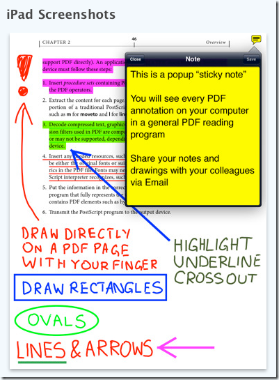
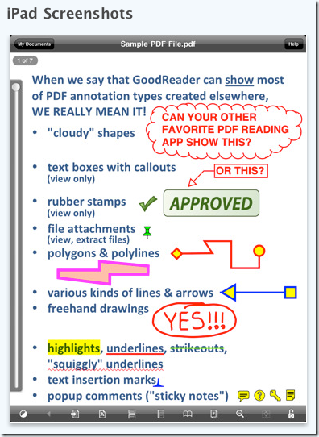
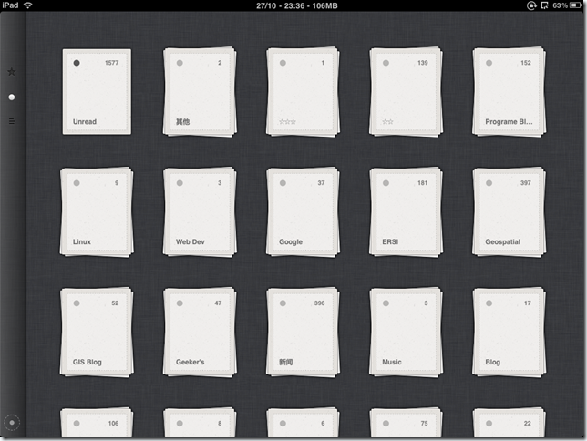
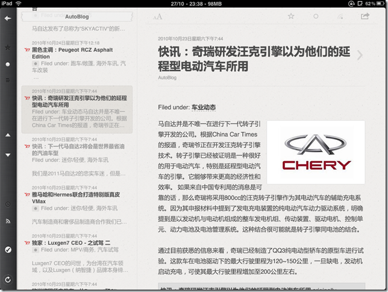

受Ipad毒害很久了，终于忍不住买了个国行的16G WIFI乞丐版入了水果教。经过几天的折腾，，已经比较安逸了。感觉甚爽，嘿嘿。
Ipad具体的性能参数我就不用罗列了。令我相当满意的是它的电池+那个9.7寸的大屏幕。电池绝对的强劲，九-十小时的使用时间绝对能满足任何人的折腾需求，比E-ink是差了点，但你得考虑这玩意和E-ink相比巨耗电不是。
屏幕尺寸对我来说刚好，反正我没移动的需求，用不着整天带来带去，而且IPS的屏幕效果比普通TN的屏幕那好的不是一点两点。
更爽的是App Store,有一大版免费+收费的软件可折腾，游戏、看书、上网可供选择的软件太多了。反观不争气的Palm，唉。。。
对我来说Killer APP就是Good Reader+Feeder，一个用来看+标注PDF，一个拿来读RSS，体验太棒了，多说无益，看看下面的图就知道了。

Goodreader巨毒的标注功能

Goodreader巨毒的标注功能


feeder,与Google reader完美同步。
夸完了好的，当然得扯扯烂的。
1，国行是最烂的一点，不能越狱，连个输入法都不能装。。而且软件还是3.2.2的版本，不是OS4，不支持多线程。唉，急切期待着升级到越狱版的OS4中。
2，水果平台忒封闭了，没有USB Host，无法访问我NAS上的共享，这个很悲剧。改明弄个HTTP共享看看能不能用。
3。有点重，长时间拿着看书的话手会有点累，不过看在它完美阅读&标注PDF的份上，就忍了吧。。
4，没有键盘，这有点吹毛求疵，但在Ipad上输入中文的体验确实奇烂无比，可能是由于默认输入法的原因，连最基本的拼音输入+联想都做不好。比我Treo Pro上的梅花都不如，更不用提Palm上的掌易了。
瑕不掩瑜，ipad绝对是个相当不错的手持设备。现在拿着它有当年折腾PPC的感觉，一键开机，上网+看书+折腾软件。晚上回去基本上不用开笔记本了，果然爽歪歪，嘿嘿。